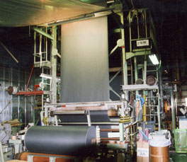
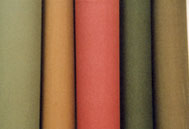

SURFACE COATING ON TEXTILES
布に、膜をつくる。
1934年から。
1934年から。
繊維の集合体である基布に、粘度のある高分子薬品を塗り、熱を加えて被膜にする。 スピーカーのエッジ、研磨材の下地、タイヤの内部—— 表からは見えないところで、製品の性能を決める布をつくっています。
1934年
創業（昭和9年）
4拠点
草加・香港・東莞・ラヨーン
40名
従業員数（本社）
27万m/月
海外2工場の生産能力
WHAT WE MAKE
繊維へのコーティング加工
含浸工程を経て、繊維の表面に粘度のある液状の高分子化学薬品を塗り、 熱乾燥処理を加えて被膜を形成させます。 薬品の溶解粘度・水溶性・表面張力に加え、繊維固有の多孔構造と ロールからの圧力を見ながら条件を決めています。


音響機器基布（スピーカーエッジ）
スピーカーの振動板を支えるエッジ材の基布。センターキャップ用複合材とその製造方法で特許（第3504641号／藤倉ゴム工業株式会社との共願）を取得しています。
研磨基布
研磨材の下地となる布へのコーティング樹脂加工。使用時の張力と摩耗に耐える被膜をつくります。
タイヤ基布
タイヤの内部で骨格となる布への特殊樹脂加工。ゴムとの接着性を担保します。
その他 産業用資材
上記以外の産業資材用繊維についても、薬品と条件を検討して対応します。新しい素材・用途のご相談を承ります。
EQUIPMENT
主要設備
- 特殊高級ディップ連続機
- 特殊高級コーティング連続機
- 高級コーティング連続機
- ヒートセッター機
HISTORY
染色から、産業資材へ
創業は染色・整理・防水樹脂加工。1980年代に染色・漂白から撤退し、 産業資材用繊維加工へ事業を移しました。
1934年11月
株式会社昭和染工場 創業。染色・整理・防水樹脂加工。東京営業所（蔵前）および大阪出張所を開設。
1943年12月
埼玉染布株式会社を設立。企業整備令により行田染布・冨田染布・小島染工場と統合し、軍の指定工場となる。
1946年7月
事業目的を繊維製品の染色・漂白・縫製および販売に変更。
1949年7月
合併した3社を分離。
1952年7月
昭和染布株式会社に社名変更、増資。
1980〜81年
染色・漂白加工から撤退し、産業資材用繊維加工へ移行。
1991年4月
昭和工業株式会社に社名変更。
1998年11月
北斗工業資材（香港）有限公司を設立。
2001年4月
ISO 9001 認証取得。
2001年7月
東莞北斗電子有限公司を設立。
2003年11月
特許 第3504641号 承認。スピーカーのセンターキャップ用複合材およびその製造方法（共願人：藤倉ゴム工業株式会社）。
2015年9月
エコアクション21 認証取得。
2017年11月
タイ国ラヨーン県に生産拠点を設立。
COMPANY
会社概要
- 商号
- 昭和工業株式会社
- 創業
- 昭和9年（1934年）11月3日
- 所在地
- 〒340-0014 埼玉県草加市住吉2丁目1番6号
- 電話
- 048-922-3331（代表）／ 048-922-3333（営業）／ 048-922-3394（生産・技術・品質管理）
- FAX
- 048-929-1488（営業・生産）／ 048-922-0945（技術）／ 048-922-0946（総務）
- 資本金
- 2,000万円
- 従業員数
- 約40名
- 事業内容
- (1) 産業資材用各種繊維基材の高分子加工
(2) 産業資材用各種繊維品の製造販売
(3) 前記各号に付帯する一切の業務 - 認証
- ISO 9001（2001年4月取得）／ エコアクション21（2015年9月取得）
- 取引銀行
- みずほ信託銀行 本店／武蔵野銀行 草加支店／商工組合中央金庫 上野支店
海外拠点
北斗工業資材(香港)有限公司
1998年11月23日 設立
スピーカー用基布エッジ材等の販売
東莞北斗電子有限公司
中国 広東省東莞市／2001年7月21日 設立
敷地 約8,000㎡・建物 延約5,000㎡
生産能力 150,000m／月
タイ拠点（ラヨーン県）
2017年11月20日 設立
敷地 約10,000㎡・建物 延約3,200㎡
生産能力 120,000m／月
技術のご相談を承ります
新しい素材へのコーティング、既存品の条件出しなど、 営業・技術に関するお問い合わせをお電話・FAX・電子メールで承ります。